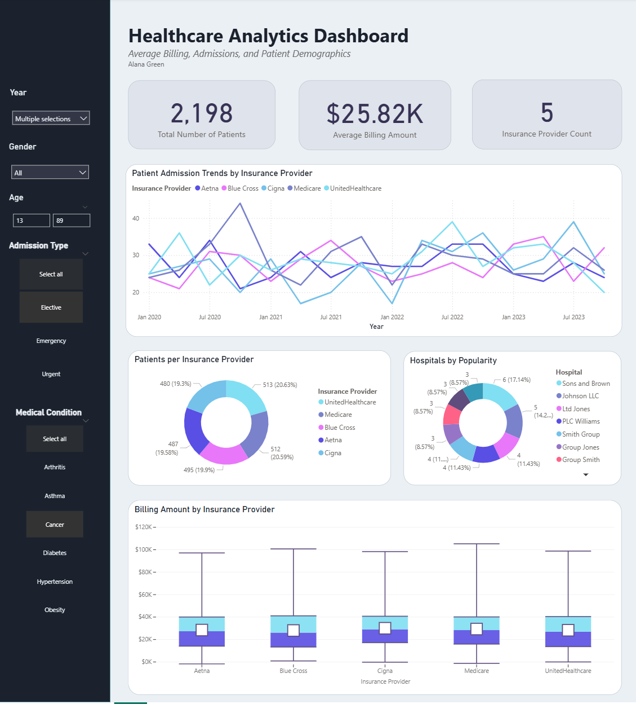

Trend Analysis in Healthcare | December 2025
Overview
This interactive dashboard was built through Power BI using a synthetic healthcare dataset, mimicking realistic records, including admission details, patient demographics, billing amounts, insurance providers, and more. The original dataset, consisting of more than 10,000 values, was designed to be an ethical alternative of accessing actual patient data, effectively allowing for exploration of vital analytical healthcare topics, like patient trends, cost patterns, and the overall performance of popular providers while abiding by privacy regulations. The purpose of my dashboard is to spread a unique understanding of these vital matters at a glance in the form of an immersive, captivating experience. Healthcare administrators, policy decision-makers, and analysts will find great benefit in studying how gender, age, medical conditions, and billing distributions play a role in client retention and how they would hypothetically compare across different providers.
Dataset of Choice
In this group project, my role was to create a Power BI visual data analysis of healthcare trends where users could manipulate variables to spot insightful connections. This dataset was selected due to its strong relations in health insurance and cost prediction, which in turn helps predict medical costs, risk factors, and modeling relationships. With 10,000 records, this dataset provides many key variables for health-insurance cost modeling, including demographics such as age and gender, medical conditions, insurance providers, admission type, and more.
Visualization

Process
This Power BI dashboard was organized to where slicers are seperated to the left while the graphs and core data information remain to the right. The KPI cards serve as straightforward information of what users are most likely to seek first, highlighting the number of patients, billing amount based on a given timeframe, and number of inurance providers taken into account given the filters chosen. Next, a line graph is shown sequentially under to represent patient admission trends per each insurance provider given a certain time period. Sudden spikes may alert the user of events to look into before choosing the provider right for them. Below, there are then two donut charts showcased representing hospital and insurance provider popularity, which is helpful in drawing connections to what people gravitate towards for a user of their demographic. Lastly, a box plot is shown to represent a detailed breakdown of typical billing ranges based on insurance providers.
Key Features
- Slicers are organized to the left, featuring filters such as year, gender, age, admission type, and medical condition. This helps users better understand what is more affordable and convenient based on their demographic.
- The aesthetics showcase a predominantly cool-colored format, with the left being predominantly dark navy to serve as a divider between the slicers and the main data it impacts based on one's filters of choice. The graphs are clearly labelled and spread out equally for easy comprehension, with the y axis on some graphs hidden for minimalism.
- The graphs presented include a line graph, 2 donut graphs, and a boxplot.
Results
Overall, this interactive dashboard is effective for identifying trends with ease based on a given demographic. While the dataset used was synthetic, this still serves as a proficient prototype in identifying patient and billing trends in order to help users and insurance providers alike to identify what a given demographic tends to cater the most to.